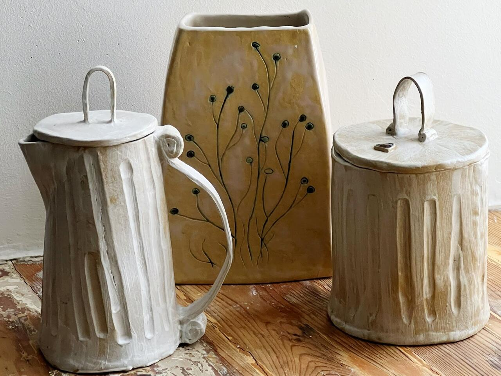
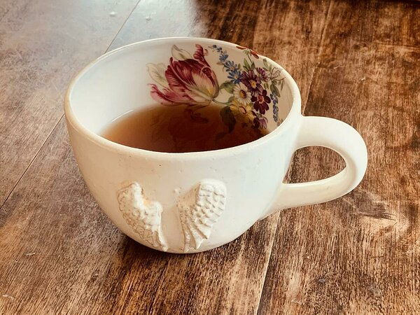

About Me
Welcome to LYZELL's POTTERY! Here you can find information about my passion for pottery and the beautiful works I create. Stay tuned for more updates!

Welcome to LYZELL's POTTERY! Here you can find information about my passion for pottery and the beautiful works I create. Stay tuned for more updates!